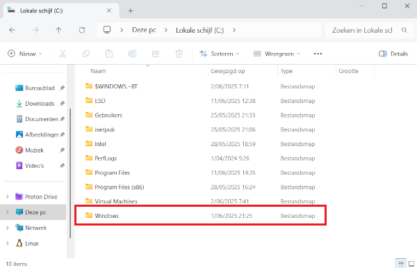
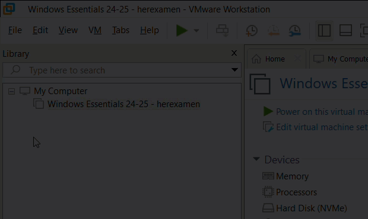
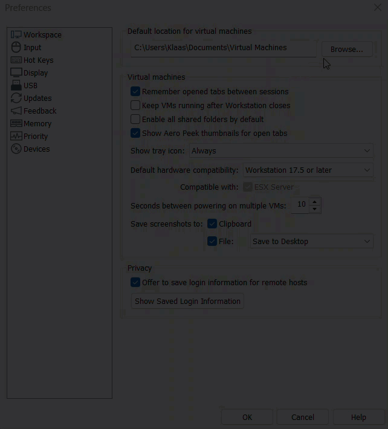

VMware Workstation Pro
1. Installatie
De onderstaande handleiding is de officiële PXL-handleiding voor het installeren en activeren van VMware Workstation. Volg de stappen in deze handleiding.
PXL: VMware Workstation Pro installeren
2. Map voor virtuele machines
Standaard slaat VMware virtuele machines op in de map "Documents". Gebruik je een clouddienst zoals OneDrive, Google Drive of Proton Drive, dan worden je virtuele machines voortdurend met de cloud gesynchroniseerd. Dat kan de prestaties negatief beïnvloeden en zelfs ervoor zorgen dat je virtuele Windows-machines crashen.
In de volgende handleiding maak je een nieuwe map aan in je bestandssysteem en pas je de standaardlocatie aan waar VMware Workstation virtuele machines opslaat.
2.1. Map Virtual Machines
Zorg dat je op je C:-schijf een map met de naam "Virtual Machines" hebt aangemaakt.
Is dat nog niet zo, maak dan een nieuwe map aan op je C:-schijf, zoals op onderstaande schermafbeelding.

2.2. Voorkeuren van VMware Workstation
Pas de voorkeuren van VMware Workstation aan zodat alle nieuwe virtuele machines automatisch worden opgeslagen in de map "C:\Virtual Machines".
Het menu Preferences openen
- Open VMware Workstation
- Kies in het bovenste menu "Edit"
- Selecteer "Preferences"

De standaardlocatie voor virtuele machines wijzigen
- Kies "Browse"
- Selecteer je map "C:\Virtual Machines"
- Klik op "OK"
